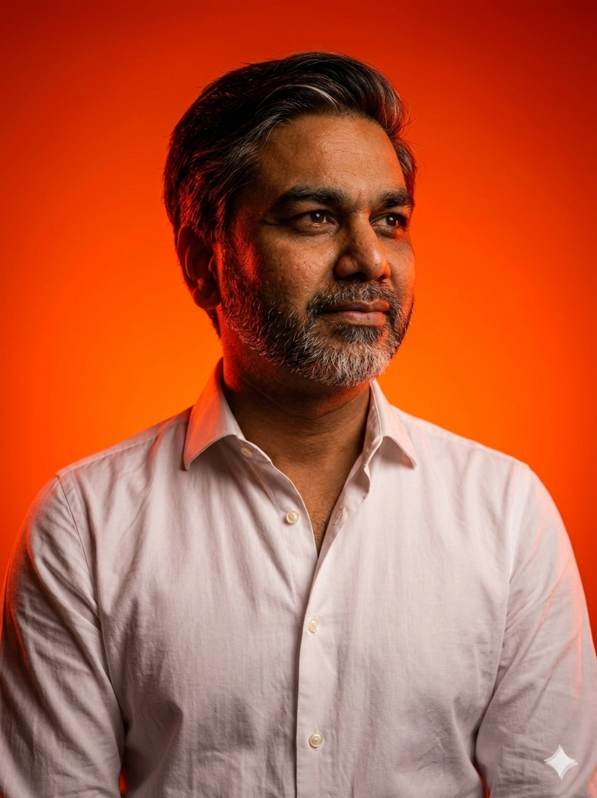

Editorial · Aabhishek Siloya
Notes worth
sitting with.
Essays and conversations on judgement, technology and the lives they shape.
Published selectively. Written for readers who prefer a considered point of view to another stream of updates.
Browse the collection ↓Featured series · Issue 06
The New Household Economy
How AI is repricing household earnings, first jobs, infrastructure and the systems families rely on to move up.
The collection
Selected reading.
Research, perspective and conversations from the field.
The New Household Economy
AI, household earnings and national resilience.
→ 06.1The Middle-Class Ladder Is Being Repriced
Households, first jobs and modern family security.
→ 06.2Who Gets to Live in the AI Economy?
Infrastructure and the systems beneath AI ambition.
→ 04Everyone Wants an AI Employee. The Useful Ones Are Still Interns.
Where enterprise AI is—and is not—earning its keep.
→ 03The Founder Building a Kinder Internet for Children
Hugh Shepherd on childhood, music and digital safety.
→ 02The Future of Travel 2026
Commerce, trust and the next growth battle in travel.
→ 01Thirty Minutes of Truth
What becomes visible when a conversation slows down.
→The premise
A publication shaped like an evening conversation, not a feed.
The point is not to flood the page. It is to publish work with enough weight to be collected, circulated and revisited.
Commercial judgement sits beside curiosity. The writing leads; the advisory work remains in the background.

Host
Aabhishek Siloya
Global business coach · Founder
The Editorial is where commercial experience, curiosity and an instinct for clarity become published thought.